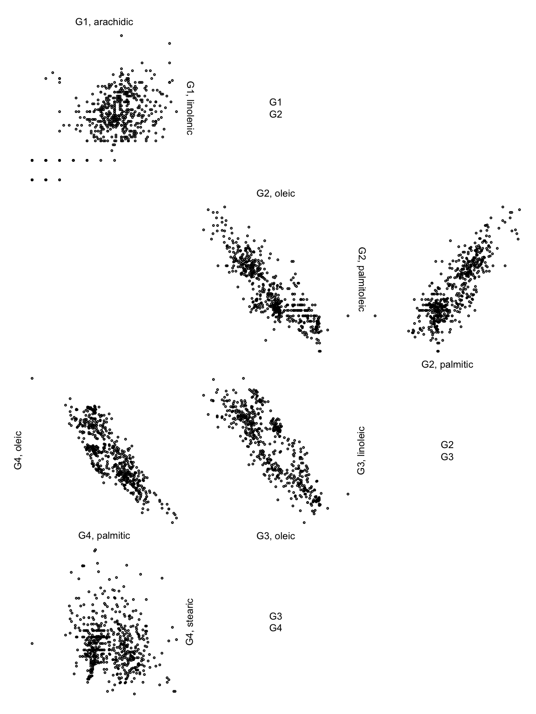

Zigzag expanded navigation plots in R: The R package zenplots
M. Hofert and R. W. Oldford
2019-07-30
selected_features.RmdThis vignette accompanies the paper “Zigzag expanded navigation plots in R: The R package zenplots”. Note that sections are numbered accordingly (or omitted). Furthermore, it is recommended to read the paper to follow this vignette.
## Warning: package 'MASS' was built under R version 3.5.2library(zenplots)2 Zenplots
As example data, we use the olive data set:
data(olive)Reproducing the plots of Figure 1:
zenplot(olive)
zenplot(olive, plot1d = "layout", plot2d = "layout")
Considering the str()ucture of zenplot() (here formatted for nicer output):
str(zenplot)function (x, turns = NULL, first1d = TRUE, last1d = TRUE,
n2dcols = c("letter", "square", "A4", "golden", "legal"),
n2dplots = NULL,
plot1d = c("label", "points", "jitter", "density", "boxplot",
"hist", "rug", "arrow", "rect", "lines", "layout"),
plot2d = c("points", "density", "axes", "label", "arrow",
"rect", "layout"),
zargs = c(x = TRUE, turns = TRUE, orientations = TRUE,
vars = TRUE, num = TRUE, lim = TRUE, labs = TRUE,
width1d = TRUE, width2d = TRUE,
ispace = match.arg(pkg) != "graphics"),
lim = c("individual", "groupwise", "global"),
labs = list(group = "G", var = "V", sep = ", ", group2d = FALSE),
pkg = c("graphics", "grid", "loon"),
method = c("tidy", "double.zigzag", "single.zigzag"),
width1d = if (is.null(plot1d)) 0.5 else 1,
width2d = 10,
ospace = if (pkg == "loon") 0 else 0.02,
ispace = if (pkg == "graphics") 0 else 0.037, draw = TRUE, ...)2.1 Layout
To investigate the layout options of zenplots a bit more, we need a larger data set. To this end we simply double the olive data here (obviously only for illustration purposes):
olive2 <- cbind(olive, olive) # just for this illustrationReproducing the plots of Figure 2:
zenplot(olive2, n2dcols = 6, plot1d = "layout", plot2d = "layout",
method = "single.zigzag")
zenplot(olive2, n2dcols = 6, plot1d = "layout", plot2d = "layout",
method = "double.zigzag")
zenplot(olive2, n2dcols = 6, plot1d = "layout", plot2d = "layout",
method = "tidy")
Note that there is also method = "rectangular" (leaving the zigzagging zenplot paradigm but being useful for laying out 2d plots which are not necessarily connected through a variable; note that in this case, we omit the 1d plots as the default (labels) is rather confusing in this example):
zenplot(olive2, n2dcols = 6, plot1d = "arrow", plot2d = "layout",
method = "rectangular")
Reproducing the plots of Figure 3:
zenplot(olive, plot1d = "layout", plot2d = "layout", method = "double.zigzag",
last1d = FALSE, ispace = 0.1)
zenplot(olive, plot1d = "layout", plot2d = "layout", n2dcol = 4, n2dplots = 8,
width1d = 2, width2d = 4)
3 Zenpaths
A very basic path (standing for the sequence of pairs (1,2), (2,3), (3,4), (4,5)):
(path <- 1:5)## [1] 1 2 3 4 5A zenpath through all pairs of variables (Eulerian):
(path <- zenpath(5))## [1] 5 1 2 3 1 4 2 5 3 4 5If dataMat is a five-column matrix, the zenplot of all pairs would then be constructed as follows:
zenplot(x = dataMat[,path])The str()ucture of zenpath() (again formatted for nicer output):
str(zenpath)function (x, pairs = NULL,
method = c("front.loaded", "back.loaded", "balanced",
"eulerian.cross", "greedy.weighted", "strictly.weighted"),
decreasing = TRUE)Here are some methods for five variables:
zenpath(5, method = "front.loaded")## [1] 5 1 2 3 1 4 2 5 3 4 5zenpath(5, method = "back.loaded")## [1] 1 2 3 1 4 2 5 3 4 5 1zenpath(5, method = "balanced")## [1] 1 2 3 5 4 1 3 4 2 5 1The following method considers two groups: One of size three, the other of size five. The sequence of pairs is constructed such that the first variable comes from the first group, the second from the second.
## [1] 1 4 2 5 1 6 2 7 1 8 3 4 3 6 7 3 5 8 2Reproducing Figure 4:
oliveAcids <- olive[, !names(olive) %in% c("area", "region")] # acids only
zpath <- zenpath(ncol(oliveAcids)) # all pairs
zenplot(oliveAcids[, zpath], plot1d = "hist", plot2d = "density")
4 Build your own zenplots
4.3 Custom layout and plots – a spiral of ggplots example
Figure 5 can be reproduced as follows (note that we do not show the plot here due to a CRAN issue when running this vignette):
path <- c(1,2,3,1,4,2,5,1,6,2,7,1,8,2,3,4,5,3,6,4,7,3,8,4,5,6,7,5,8,6,7,8)
turns <- c("l",
"d","d","r","r","d","d","r","r","u","u","r","r","u","u","r","r",
"u","u","l","l","u","u","l","l","u","u","l","l","d","d","l","l",
"u","u","l","l","d","d","l","l","d","d","l","l","d","d","r","r",
"d","d","r","r","d","d","r","r","d","d","r","r","d","d")
library(ggplot2) # for ggplot2-based 2d plots
stopifnot(packageVersion("ggplot2") >= "2.2.1") # need 2.2.1 or higher
ggplot2d <- function(zargs) {
r <- extract_2d(zargs)
num2d <- zargs$num/2
df <- data.frame(x = unlist(r$x), y = unlist(r$y))
p <- ggplot() +
geom_point(data = df, aes(x = x, y = y), cex = 0.1) +
theme(axis.line = element_blank(),
axis.ticks = element_blank(),
axis.text.x = element_blank(),
axis.text.y = element_blank(),
axis.title.x = element_blank(),
axis.title.y = element_blank())
if(num2d == 1) p <- p +
theme(panel.background = element_rect(fill = 'royalblue3'))
if(num2d == (length(zargs$turns)-1)/2) p <- p +
theme(panel.background = element_rect(fill = 'maroon3'))
ggplot_gtable(ggplot_build(p))
}
zenplot(as.matrix(oliveAcids)[,path], turns = turns, pkg = "grid",
plot2d = function(zargs) ggplot2d(zargs))4.4 Data groups
Split the olive data set into three groups (according to their variable area):
oliveAcids.by.area <- split(oliveAcids, f = olive$area)
# Replace the "." by " " in third group's name
names(oliveAcids.by.area)[3] <- gsub("\\.", " ", names(oliveAcids.by.area)[3])
names(oliveAcids.by.area)## [1] "South" "Sardinia" "Centre North"Reproducing the plots of Figure 6 (note that lim = "groupwise" does not make much sense here as a plot):

zenplot(oliveAcids.by.area, lim = "groupwise", labs = list(sep = " - "),
plot1d = function(zargs) label_1d_graphics(zargs, cex = 0.8),
plot2d = function(zargs)
points_2d_graphics(zargs, group... = list(sep = "\n - \n")))
4.5 Custom zenpaths
Find the “convexity” scagnostic for each pair of olive acids.
library(scagnostics)
Y <- scagnostics(oliveAcids) # compute scagnostics (scatter-plot diagonstics)
X <- Y["Convex",] # pick out component 'convex'
d <- ncol(oliveAcids)
M <- matrix(, nrow = d, ncol = d) # matrix with all 'convex' scagnostics
M[upper.tri(M)] <- X # (i,j)th entry = scagnostic of column pair (i,j) of oliveAcids
M[lower.tri(M)] <- t(M)[lower.tri(M)] # symmetrize
round(M, 5)## [,1] [,2] [,3] [,4] [,5] [,6] [,7] [,8]
## [1,] NA 0.48952 0.46343 0.45887 0.43914 0.34583 0.31259 0.28413
## [2,] 0.48952 NA 0.42276 0.50499 0.44591 0.35855 0.35846 0.31729
## [3,] 0.46343 0.42276 NA 0.39700 0.36394 0.31316 0.29534 0.33709
## [4,] 0.45887 0.50499 0.39700 NA 0.46454 0.36616 0.29451 0.34888
## [5,] 0.43914 0.44591 0.36394 0.46454 NA 0.31977 0.31443 0.36750
## [6,] 0.34583 0.35855 0.31316 0.36616 0.31977 NA 0.53726 0.34001
## [7,] 0.31259 0.35846 0.29534 0.29451 0.31443 0.53726 NA 0.22231
## [8,] 0.28413 0.31729 0.33709 0.34888 0.36750 0.34001 0.22231 NAShow the six pairs with largest “convexity” scagnostic:
zpath <- zenpath(M, method = "strictly.weighted") # list of ordered pairs
head(M[do.call(rbind, zpath)]) # show the largest six 'convexity' measures## [1] 0.5372599 0.5049945 0.4895179 0.4645377 0.4634277 0.4588675Extract the corresponding pairs:
(ezpath <- extract_pairs(zpath, n = c(6, 0))) # extract the first six pairs## [[1]]
## [1] 7 6
##
## [[2]]
## [1] 4 2
##
## [[3]]
## [1] 2 1
##
## [[4]]
## [1] 5 4
##
## [[5]]
## [1] 3 1
##
## [[6]]
## [1] 4 1Reproducing Figure 7 (visualizing the pairs):
library(graph)
plot(graph_pairs(ezpath)) # depict the six most convex pairs (edge = pair)Connect them:
(cezpath <- connect_pairs(ezpath)) # keep the same order but connect the pairs## [[1]]
## [1] 7 6
##
## [[2]]
## [1] 4 2 1
##
## [[3]]
## [1] 5 4
##
## [[4]]
## [1] 3 1 4Build the corresponding list of matrices:
oliveAcids.grouped <- groupData(oliveAcids, indices = cezpath) # group data for (zen)plottingReproducing Figure 8 (zenplot of the six pairs of acids with largest “convexity” scagnostic):
zenplot(oliveAcids.grouped)
5 Advanced features
5.1 The structure of a zenplot
Here is the structure of a return object of zenplot():
## List of 2
## $ path :List of 3
## ..$ turns : chr [1:19] "d" "r" "r" "d" ...
## ..$ positions: num [1:19, 1:2] 1 2 2 2 3 4 4 4 5 6 ...
## .. ..- attr(*, "dimnames")=List of 2
## .. .. ..$ : NULL
## .. .. ..$ : chr [1:2] "x" "y"
## ..$ occupancy: chr [1:8, 1:6] "" "" "" "" ...
## $ layout:List of 6
## ..$ orientations : chr [1:19] "h" "s" "v" "s" ...
## ..$ dimensions : num [1:19] 1 2 1 2 1 2 1 2 1 2 ...
## ..$ vars : num [1:19, 1:2] 1 1 2 3 3 3 4 5 5 5 ...
## .. ..- attr(*, "dimnames")=List of 2
## .. .. ..$ : NULL
## .. .. ..$ : chr [1:2] "x" "y"
## ..$ layoutWidth : num 33
## ..$ layoutHeight : num 44
## ..$ boundingBoxes: num [1:19, 1:4] 0 0 10 11 11 11 21 22 22 22 ...
## .. ..- attr(*, "dimnames")=List of 2
## .. .. ..$ : NULL
## .. .. ..$ : chr [1:4] "left" "right" "bottom" "top"Let’s have a look at the components. The occupancy matrix encodes the occupied cells in the rectangular layout:
res[["path"]][["occupancy"]]## [,1] [,2] [,3] [,4] [,5] [,6]
## [1,] "" "d" "" "" "" ""
## [2,] "" "r" "r" "d" "" ""
## [3,] "" "" "" "d" "" ""
## [4,] "" "" "" "r" "r" "d"
## [5,] "" "" "" "" "" "d"
## [6,] "l" "l" "" "d" "l" "l"
## [7,] "" "u" "" "d" "" ""
## [8,] "" "u" "l" "l" "" ""The two-column matrix positions contains in the ith row the row and column index (in the occupancy matrix) of the ith plot:
head(res[["path"]][["positions"]])## x y
## [1,] 1 2
## [2,] 2 2
## [3,] 2 3
## [4,] 2 4
## [5,] 3 4
## [6,] 4 45.2 Tools for writing 1d and 2d plot functions
Example structure of 2d plot based on graphics:
points_2d_graphics## function(zargs,
## cex = 0.4, box = FALSE,
## add = FALSE, group... = NULL, plot... = NULL, ...)
## {
## r <- extract_2d(zargs)
## xlim <- r$xlim
## ylim <- r$ylim
## x <- as.matrix(r$x) # for points()
## y <- as.matrix(r$y)
## same.group <- r$same.group
## if(same.group) {
## if(!add) plot_region(xlim = xlim, ylim = ylim, plot... = plot...) # plot region; uses xlim, ylim
## points(x = x, y = y, cex = cex, ...)
## if(box) box(...) # plot the box
## } else {
## args <- c(list(zargs = zargs, add = add), group...)
## do.call(group_2d_graphics, args)
## }
## }
## <bytecode: 0x7ff3ff0acc80>
## <environment: namespace:zenplots>For setting up the plot region of plots based on graphics:
plot_region## function(xlim, ylim, plot... = NULL)
## {
## if(is.null(plot...)) {
## plot(NA, xlim = xlim, ylim = ylim, type = "n", ann = FALSE, axes = FALSE, log = "")
## } else {
## fun <- function(...) plot(NA, xlim = xlim, ylim = ylim, ...)
## do.call(fun, plot...)
## }
## }
## <bytecode: 0x7ff3fb41e2e0>
## <environment: namespace:zenplots>Determining the indices of the two variables to be plotted in the current 1d or 2d plot (the same for 1d plots):
plot_indices## function(zargs)
## zargs$vars[zargs$num,]
## <bytecode: 0x7ff3ff274908>
## <environment: namespace:zenplots>Basic check that the return value of zenplot() is actually the return value of the underlying unfold():